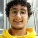

UX UI Designer
Assistente de UX UI Designer · YouX Group
Formação
Bacharelado em Sistemas de Informação — Universidade Federal de Lavras (UFLA)
Objetivo
Aprofundar conhecimentos em UX/UI, acessibilidade e front-end, conectando design centrado no usuário com código de qualidade.
Uma breve descrição da minha trajetória.
Sou estudante de Sistemas de Informação na UFLA e atuo como Assistente de UX UI Design na empresa YouX Group. Tenho paixão por criar experiências digitais que sejam ao mesmo tempo belas, funcionais e acessíveis.
Meu foco está na interseção entre design e desenvolvimento: entender o usuário, prototipar soluções no Figma e transformá-las em interfaces web responsivas. Acredito que boa experiência começa com empatia e termina com código limpo.
Dados rápidos sobre mim.
Tecnologias, ferramentas e competências.
Trabalhos práticos e experiências de aprendizado.
Jogo Web simples que funciona como um quiz onde o usuário deve responder perguntas sobre JavaScript.
Portfólio pessoal com HTML, CSS e JavaScript usando Bootstrap e Tailwind, com tema claro/escuro e layout responsivo.
Biblioteca de componentes reutilizáveis no Figma: tipografia, cores, botões, cards e formulários com variantes e auto-layout.
Áreas que me apaixonam e quero aprofundar.
Criar interfaces centradas no usuário que sejam intuitivas, eficientes e esteticamente agradáveis.
Dominar componentes, variáveis e prototipagem avançada para criar design systems escaláveis.
Transformar designs em código limpo e responsivo, aproximando design e engenharia.
Garantir que produtos digitais sejam usáveis por todas as pessoas, seguindo as diretrizes WCAG.
Validar hipóteses de design através de testes de usabilidade e pesquisas qualitativas.
Estou aberto a oportunidades e colaborações.